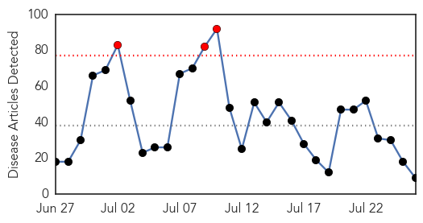
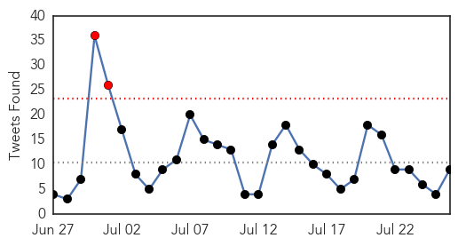
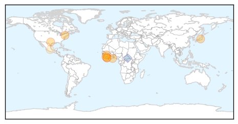
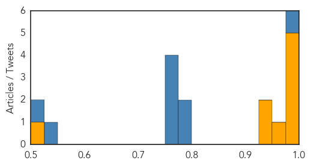
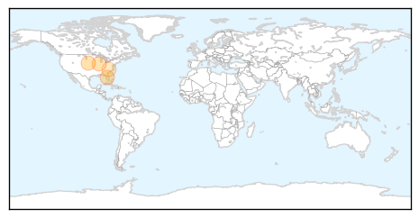
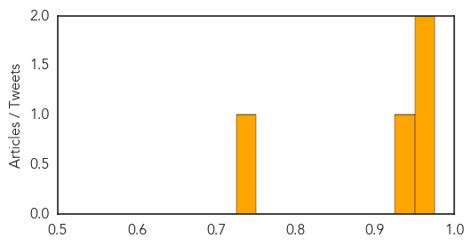

Ebola
30-Day Web Trend
3 alerts, 0 warnings

30-Day Twitter Trend
2 alerts, 0 warnings

Article Locations
Article Confidences
Top Articles:
- 1.000
- 8 Ebola Cases Reported In 3 Regions
- 0.999
- Doctor Recovers From Ebola, Leaves New York City Hospital
- 0.998
- The unsung heroes of the Ebola fight need our help
- 0.998
- Ebola produced a community health emergency—and we weren’t prepared for it
- 0.981
- Nigeria Not Keeping A Good Watch
- 0.974
- A year later: Hero doc reflects on surviving Ebola
- 0.943
- Liberian community in the Triangle celebrates Ebola-free Independence Day :: WRAL.com
- 0.928
- Week-ends (10/18/14)
- 0.512
- Ebola: How Christian students in Sierra Leone helped save their country
Top Tweets:
- 0.997
- Jour 3 : Résidence Africa Stop Ebola, bluezone de Kaloum
- 0.961
- Sierra Leone president unveils post-Ebola 'battle plan' - Yahoo News - Yahoo News http://t.co/6qemwGZGOf ebola EVD
- 0.960
- The unsung heroes of the Ebola fight need our help - Quartz - Quartz http://t.co/Zecwk4L53P ebola EVD
- 0.960
- The unsung heroes of the Ebola fight need our help - Quartz - Quartz http://t.co/OZwXS2uQCi ebola EVD
- 0.960
- The unsung heroes of the Ebola fight need our help - Quartz - Quartz http://t.co/EUlL5V17s2 ebola EVD
- 0.943
- Ebola: How Christian students in Sierra Leone helped save their country ... - ChristianToday http://t.co/zf59Z6yO7r ebola EVD
- 0.942
- Ebola created a public health emergency—and we weren't ready for it | Ars ... - Ars Technica http://t.co/WOBJYLP0YN ebola EVD
- 0.809
- Uniiorin Working To Develop Ebola Vaccine, Says VC | - Leadership - Leadership Newspapers http://t.co/uotPAKnbz9 ebola EVD
- 0.775
- Ebola survivor Kent Brantly visits the Upstate - FOX Carolina 21 - WHNS Greenville http://t.co/vdoCIg8M0O ebola EVD
- 0.625
- Jour 4 : Petite interview des candidats à propos de la Guinée et d'Ebola. Avec Doctors Without Borders/ Médecins... http://t.co/Gb3uNix5PV
- 0.609
- Ebola created a public health emergency—and we weren't ready for it | Ars ... - Ars Technica http://t.co/2AhMbd9s03
- 0.581
- The unsung heroes of the Ebola fight need our help - Quartz - Quartz http://t.co/i3IvJ1QVNk
- 0.573
- A year later: Hero doc reflects on surviving Ebola | Fox News - Fox News http://t.co/QO3sxCJHPA ebola EVD
- 0.571
- Caribbean states almost ready for Ebola | News | Jamaica Gleaner - Jamaica Gleaner (subscription) http://t.co/0jDHDhzM07 ebola EVD
West Nile Virus
30-Day Web Trend
8 alerts, 3 warnings

30-Day Twitter Trend
0 alerts, 0 warnings

Article Locations
Article Confidences
Top Articles:
Top Tweets:
-
No tweets found for Jul 26, 2015